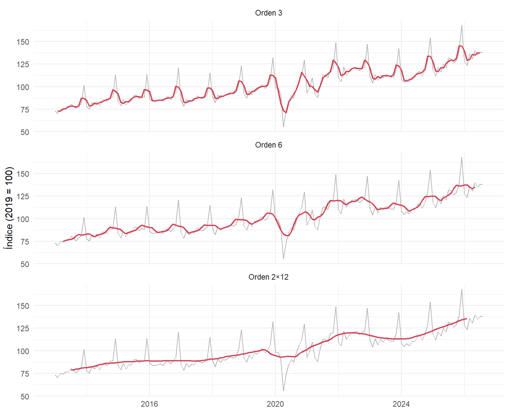
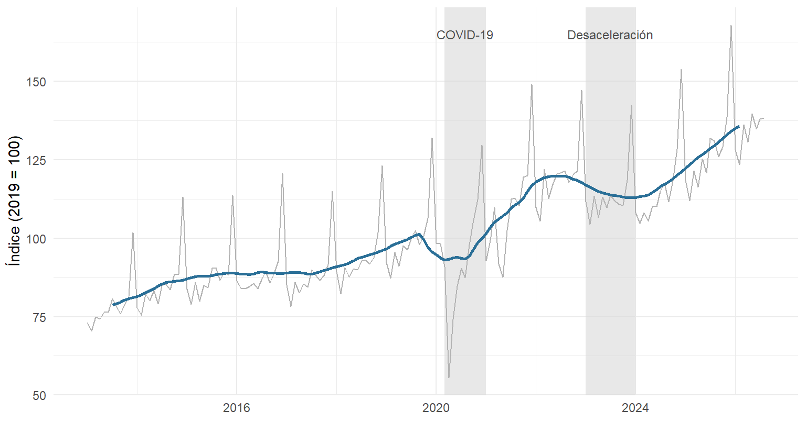
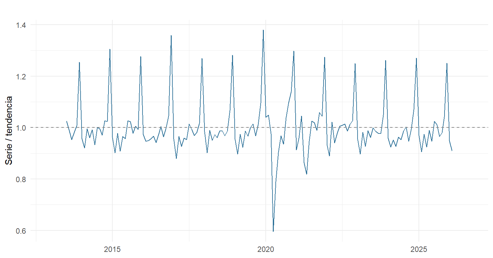

Capítulo 3 Aproximación por promedio móvil
3.1 Idea
Un promedio móvil reemplaza cada observación por el promedio de las observaciones vecinas. Al promediar, se suavizan las fluctuaciones de corto plazo y queda a la vista el componente de tendencia-ciclo. El promedio móvil centrado de orden \(m = 2k + 1\) es
\[\begin{equation} \hat{T}_t = \frac{1}{m} \sum_{j=-k}^{k} y_{t+j}. \tag{3.1} \end{equation}\]
Cuando el orden es par, como \(m = 12\) en datos mensuales, el promedio no queda centrado en un mes. Se aplica entonces un segundo promedio de orden 2, lo que da el promedio 2×12:
\[\begin{equation} \hat{T}_t = \tfrac{1}{24} y_{t-6} + \tfrac{1}{12}\left(y_{t-5} + \dots + y_{t+5}\right) + \tfrac{1}{24} y_{t+6}. \tag{3.2} \end{equation}\]
El 2×12 da el mismo peso a los doce meses del año, por lo que elimina la estacionalidad anual y conserva solo la tendencia-ciclo (Hyndman & Athanasopoulos, 2021, Capítulo 3). En R se calcula con forecast::ma(), que centra automáticamente los órdenes pares.
3.2 Comparación de órdenes
ma3 <- ma(y, order = 3)
ma6 <- ma(y, order = 6)
ma12 <- ma(y, order = 12) # orden par: ma() aplica el promedio 2x12 centradoordenes <- rbind(
data.frame(fecha = as.numeric(time(y)), y = as.numeric(y), ma = as.numeric(ma3), orden = "Orden 3"),
data.frame(fecha = as.numeric(time(y)), y = as.numeric(y), ma = as.numeric(ma6), orden = "Orden 6"),
data.frame(fecha = as.numeric(time(y)), y = as.numeric(y), ma = as.numeric(ma12), orden = "Orden 2×12")
)
ordenes$orden <- factor(ordenes$orden, levels = c("Orden 3", "Orden 6", "Orden 2×12"))
ggplot(ordenes, aes(fecha)) +
geom_line(aes(y = y), colour = "grey70") +
geom_line(aes(y = ma), colour = naranja, linewidth = 0.8, na.rm = TRUE) +
facet_wrap(~orden, ncol = 1) +
labs(x = NULL, y = "Índice (2019 = 100)")
Figura 3.1: Serie original (gris) y promedios móviles centrados de orden 3, 6 y 2×12.
La Figura 3.1 muestra el efecto del orden:
- Con orden 3, el promedio todavía sigue los picos de diciembre: tres meses no alcanzan a cubrir un ciclo estacional completo.
- Con orden 6, la curva es más suave, pero conserva una ondulación anual, porque medio año no promedia todos los meses del ciclo.
- Con orden 2×12, la ondulación desaparece y queda la tendencia-ciclo. Que la estacionalidad desaparezca justo con un orden de 12 meses confirma que el periodo estacional es anual.
El promedio centrado tiene un costo: no existe para los primeros ni para los últimos 6 meses, porque necesita datos de ambos lados. Es una herramienta descriptiva, no de pronóstico.
3.3 Tendencia-ciclo y ciclos de la serie
tendencia <- data.frame(fecha = as.numeric(time(y)), y = as.numeric(y), t = as.numeric(ma12))
periodos <- data.frame(
ini = c(2020 + 2/12, 2023), fin = c(2021, 2024),
nombre = c("COVID-19", "Desaceleración")
)
ggplot(tendencia, aes(fecha)) +
geom_rect(data = periodos, aes(xmin = ini, xmax = fin, ymin = -Inf, ymax = Inf),
inherit.aes = FALSE, fill = "grey85", alpha = 0.6) +
geom_text(data = periodos, aes(x = (ini + fin) / 2, y = 165, label = nombre),
inherit.aes = FALSE, size = 3.2, colour = "grey30") +
geom_line(aes(y = y), colour = "grey70") +
geom_line(aes(y = t), colour = azul, linewidth = 1, na.rm = TRUE) +
labs(x = NULL, y = "Índice (2019 = 100)")
Figura 3.2: Tendencia-ciclo estimada con el promedio móvil 2×12 y periodos destacados.
La tendencia-ciclo de la Figura 3.2 permite distinguir varios ciclos en la serie:
- 2013–2019, crecimiento estable. La tendencia avanza en promedio 3,6 % por año.
- 2020, choque del COVID-19. El cierre de abril llevó el índice a 55,5. El promedio 2×12 reparte esa caída en varios meses, por lo que la tendencia baja menos que la serie. Es un choque puntual, no un cambio del patrón estacional.
- 2021–2022, rebote. La tendencia supera ampliamente su nivel de 2019.
- 2023, desaceleración. La tasa de crecimiento anual de la tendencia llega a -5,2 %, en un periodo de inflación y tasas de interés altas.
- 2024–2026, recuperación. La tendencia vuelve a crecer; en el último mes con promedio disponible (febrero de 2026), su variación anual es 9,8 %.
3.4 Componente estacional-irregular
Si la tendencia-ciclo se retira de la serie, queda la parte estacional y la irregular. Como la amplitud de los picos crece con el nivel (ver Figura 2.1), conviene un esquema multiplicativo y calcular el cociente \(y_t / \hat{T}_t\):
ratio <- y / ma12
autoplot(ratio, colour = azul) +
geom_hline(yintercept = 1, linetype = "dashed", colour = "grey50") +
labs(x = NULL, y = "Serie / tendencia")
Figura 3.3: Cociente entre la serie y su promedio móvil 2×12. Los valores por encima de 1 indican meses que venden más que la tendencia.
La Figura 3.3 deja ver el patrón que se analiza en el Capítulo 5: cada diciembre el cociente sube a cerca de 1,3 (unas ventas un 30 % por encima de la tendencia), y febrero y abril quedan casi siempre por debajo de 1. La única ruptura grande del patrón es la de 2020.